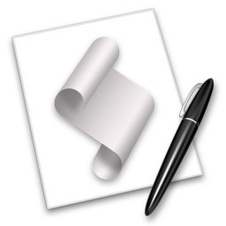

and sometimes downright fishy
thoughts on Technology and Leadership
by Herb Bowie
Adaptive Startup for the Mac

How shall I start thee? Let me count the ways….
Apple offers multiple approaches to launching selected applications when you start up your Mac. You can specify any number of Login Items as part of the Users & Groups panel within your System Preferences. And of course, when shutting down with OS X Lion (10.7), you can leave the option checked to reopen windows when logging back in, so that your Mac starts up with the same apps and windows that were last open.
For me, at least, neither of these options has been entirely satisfactory. I’m in the habit of opening apps and windows and tabs throughout the day, then shutting my Mac down at night before I go to bed; when I start it up in the morning, I want to start fresh – not facing the leftover detritus from the day before.
On most mornings, when I start my Mac, I want it to open a standard set of apps and web pages so they’re ready for me when I sit down to my desk. On the other hand, if I’m traveling with my MacBook, or taking it in to the Genius Bar for assistance, I don’t want my computer to spend five minutes opening a dozen applications before I can wrest control away from it it – in those cases, I’d like a chance to abort the normal startup sequence, and launch apps on my own.
Being dissatisfied with the other solutions available, I finally took matters into my own hands and cobbled together the following AppleScript program. While AppleScript is not for the faint of heart, neither is it only for the use of serious developers. If you’re not familiar with the language, have no fear: just fire up your AppleScript Editor application (found in your Utilities folder), then copy and paste the following code into a new window. You’ll want to customize it for your needs, but such modifications should be straightforward.
You can download the entire script from this location.
So without further preamble, let me walk you through the code, explaining what it does and how to modify it along the way. (Note that the downloaded script also contains comments to explain the operation of the program; I won’t repeat those here, since I’ll be offering a fuller explanation as I go.)
One of the features of this script is that it writes a log file to your desktop explaining exactly what it did during its execution. We’ll store the log file in the user’s Desktop folder, with the name “Adaptive Startup Log.txt”.
So, to start with, let’s specify a few global variables that will be used for the logging operation.
global logFilePath
global logFile
global lf
set lf to (ASCII character 10) as string
set logFilePath to (path to desktop as string) & "Adaptive Startup Log.txt" as string
Now let’s delete the log file, if it already exists in your Desktop folder.
tell application "System Events"
set logExists to exists file "Adaptive Startup Log.txt" of desktop folder
end tell
if logExists then
set logFileAlias to logFilePath as alias
tell application "Finder" to delete logFileAlias
end if
Let’s open the log file so that we can write to it throughout the script.
set logFile to open for access logFilePath with write permission
Ensure that this script is frontmost before we try to engage the user.
activate
Now let’s give the user a chance to abort the script without doing anything else. We’ll start with a verbal announcement, then pop up a dialog box. We’ll give the user 30 seconds to respond to the dialog box, by either giving the OK to proceed, asking for more Choices, or telling us to Cancel. If we haven’t heard anything in 30 seconds, then we’ll assume the user has stepped away and wants us to proceed.
say "Startup sequence about to begin"
set go to true
try
display dialog "Startup sequence about to begin" buttons {"Cancel", "Choices", "OK"} default button "OK" giving up after 30
set selectedButton to button returned of the result
if selectedButton = "OK" or selectedButton = "Choices" or gave up of the result = true then
set go to true
else
set go to false
end if
on error errStr
if the errStr contains "User canceled" then
set go to false
else
set go to true
end if
end try
If the user has asked us to proceed, then see if they want a list of choices about which apps to launch.
set choice to "My Usual Apps"
if go then
if selectedButton = "Choices" then
choose from list {"My Usual Apps", "My Writing Apps"}
if result is false then
set go to false
else
set choices to result
set choice to item 1 of choices
end if
end if
end if
If we got the permission to go forward with the launch sequence, either explicitly or implicitly, then we’ll proceed with the bulk of the script.
if go then
Now let’s write the first line to the log file, indicating the date and time at which we’re starting the script. Note that we’re using a subroutine called “writeLogLine” that will be defined later.
set eof of logFile to 0
writeLogLine("Adaptive Startup launching at " & (current date))
writeLogLine(" ")
As part of my normal daily startup, I like to perform a little automated maintenance. I’ve got several backup folders that get new files added to them on a regular basis. Here’s where I toss out the old ones, keeping only the latest five backups, so that they don’t accumulate into some hellish mess. Modify to meet your needs, or delete this section altogether if you have no need for it.
set the homeFolder to path to home folder as string
set the backupsFolder to the homeFolder & "Backups:"
set the pruneFolder to the backupsFolder & "Bento Backups:"
set the pruneAlias to the pruneFolder as alias
deleteOldFilesFromFolder(pruneAlias, false, 5)
set the pruneFolder to the backupsFolder & "iWisdom Backups:"
set the pruneAlias to the pruneFolder as alias
deleteOldFilesFromFolder(pruneAlias, true, 5)
set the pruneFolder to the backupsFolder & "Moneydance Backups:"
set the pruneAlias to the pruneFolder as alias
deleteOldFilesFromFolder(pruneAlias, true, 5)
set the pruneFolder to the backupsFolder & "OmniFocus Backups:"
set the pruneAlias to the pruneFolder as alias
deleteOldFilesFromFolder(pruneAlias, true, 20)
set the pruneFolder to the backupsFolder & "Two Due Backups:"
set the pruneAlias to the pruneFolder as alias
deleteOldFilesFromFolder(pruneAlias, true, 5)
set the pruneFolder to the backupsFolder & "UMSeattle Backups:"
set the pruneAlias to the pruneFolder as alias
deleteOldFilesFromFolder(pruneAlias, true, 5)
set the pruneFolder to the backupsFolder & "URL Union Backups:"
set the pruneAlias to the pruneFolder as alias
deleteOldFilesFromFolder(pruneAlias, true, 5)
writeLogLine(" ")
Here’s another maintenance task I like to start my day with: empty out the Downloads folder, and take out the Trash. Again, modify or delete altogether, in accordance with your preferences.
set myDownloadFolder to (path to downloads folder)
tell application "Finder"
delete items of myDownloadFolder
empty trash
end tell
writeLogLine("Downloads folder thrown in the trash")
writeLogLine("Trash emptied")
writeLogLine(" ")
Now let’s log the choice the user made earlier about which set of apps to launch.
writeLogLine("Launching " & choice)
Now let’s launch our first application, using a subroutine called “launchApp”. In addition to specifying the name of the application, we’ll pass a true/false indication of whether we want the app to be hidden after it is launched (to avoid cluttering up our screen with too many visible apps).
Note that any apps identified at this point will be launched irregardless of what set the user chose.
launchApp("LaunchBar", false)
Now let’s check and see whether we have an Internet connection. If not, then we’ll skip opening apps dependent on access to the ’Net. Otherwise, once we’ve got the apps open, we’ll open a few Web pages we like to view first thing in the morning.
set internet_status to 1
try
do shell script "curl --connect-timeout 5 http://www.amazon.com"
on error
set internet_status to 0
end try
if (internet_status = 1) then
writeLogLine("Internet is available")
else
writeLogLine("Internet is not available")
end if
Now we’re going to check for the presence of an external drive (modify the name of the drive to match your setup). If the drive is present, then we’ll assume that we’re in our normal home configuration, and launch apps accordingly. If the drive is missing, then we’ll assume we’re mobile.
set extdrives to 0
set file_server_status to 0
tell application "Finder"
if "HB HD Spring Clone" exists then
set extdrives to 1
end if
end tell
If external drives are present, then launch apps dependent on them, and mount our home network file server.
if (extdrives = 1) then
writeLogLine("External drives are available")
launchApp("ChronoSync", false)
tell application "Finder"
try
mount volume "afp://10.0.1.1" as user name "Herb Bowie" with password "password"
set file_server_status to 1
on error
set file_server_status to 0
end try
end tell
If our file server mounted successfully, then we can launch any apps dependent on files only found there.
if (file_server_status = 1) then
writeLogLine("Mounted Home Media Drive")
launchApp("Moneydance", true)
end if
else
writeLogLine("External drives are not available")
end if
writeLogLine(" ")
Now launch our favorite apps and Web pages, depending on the set chosen earlier, and on the other conditions detected. Note that we’re using PowerTunes from Fat Cat Software, rather than launching iTunes directly, so that we can specify which library we want it to use.
if choice = "My Usual Apps" then
if (extdrives = 1) then
launchApp("ChronoSync", true)
end if
launchApp("PowerTunes", true)
tell application "PowerTunes"
open library "iTunes"
end tell
launchApp("iCal", true)
launchApp("OmniFocus", true)
launchApp("BBEdit", true)
launchApp("TextMate", true)
launchApp("Two Due", false)
-- Now launch apps dependent on the Internet
if (internet_status = 1) then
launchApp("Mail", true)
launchApp("Safari", false)
launchApp("App Store", true)
launchApp("MacUpdate Desktop", true)
launchApp("URL Union", true)
open location "http://my.yahoo.com"
open location "http://facebook.com"
open location "http://www.swackett.com/app/"
end if
We’re going to launch NetBeans with a separate try block, since it’s a hefty Java app that typically doesn’t launch quickly enough to be reported as successful by the activate routine.
try
tell application "NetBeans 7.1.2"
activate
end tell
end try
delay 10
tell application "Finder"
set visible of process "NetBeans" to false
end tell
writeLogLine("Application " & "NetBeans" & " launched and hidden")
I’ve got a folder called “Active Projects” inside my home folder, and I put an alias there to anything I’m currently working on, so that it will open automatically at startup.
set the projects_folder to path to home folder as string
set the projects_folder to the projects_folder & "Active Projects:"
set the projects_folder to the projects_folder as alias
set the apps_folder to path to applications folder as string
set omni_outliner to the apps_folder & "OmniOutliner Professional.app"
set omni_outliner to the omni_outliner as alias
tell application "System Events" to get every disk item of the projects_folder whose visible is true
set projects_files to result
repeat with projects_file in projects_files
tell application "System Events" to get name extension of projects_file
if result is "oo3" then
tell application "Finder"
open projects_file using omni_outliner
end tell
else
tell application "Finder"
open projects_file
end tell
end if
tell application "System Events" to get displayed name of projects_file
writeLogLine("Opened file " & result)
end repeat
end if
Here’s a separate routine for launching a more manageable set of apps geared to a particular purpose.
if choice = "My Writing Apps" then
launchApp("TextMate", false)
launchApp("Dictionary", false)
launchApp("Two Due", false)
end if
OK, let’s wrap things up. We’ll finish by opening the log file in whatever our default text editor happens to be, which signals that we’re done, and presents us with a nice neat record of what we’ve done.
writeLogLine(" ")
writeLogLine("Adaptive Startup finishing at " & (current date))
close access logFile
tell application "Finder"
open logFilePath
end tell
else
close access logFile
end if
Aforementioned subroutines follow.
on launchApp(appName, hide)
try
activate application ((path to applications folder as text) & appName & ".app")
-- Let's pause for a few seconds, to give our app a chance to launch before we try to hide it
delay 5
if hide then
tell application "Finder"
set visible of process appName to false
end tell
writeLogLine("Application " & appName & " launched and hidden")
else
writeLogLine("Application " & appName & " launched")
end if
on error
writeLogLine("Application " & appName & " could not be launched")
end try
end launchApp
on deleteOldFilesFromFolder(pth, sortByDate, filesToKeep)
writeLogLine("Reviewing files in " & (pth))
tell application "Finder"
activate
set filelist to files in pth
if sortByDate then
set filelist1 to (sort filelist by modification date)
else
set filelist1 to the reverse of (sort filelist by name)
end if
end tell
set fileCount to 0
repeat with oneFile in filelist1
tell application "System Events" to get displayed name of oneFile
set oneFileName to result
tell application "System Events" to get modification date of oneFile
set modDate to result
set fileCount to fileCount + 1
if fileCount ≤ filesToKeep then
-- writeLogLine("Keeping " & modDate & " " & oneFileName)
else
writeLogLine("Deleting " & modDate & " " & oneFileName)
tell application "Finder" to delete oneFile
end if
end repeat
end deleteOldFilesFromFolder
on writeLogLine(logLine)
write logLine & lf to logFile
end writeLogLine
There you have it! A fairly complete startup script that you can tailor to your liking, and a nice little tour of AppleScript capabilities along the way!
Once you’ve tweaked this for your situation and preferences, save it somewhere as a script and run it from within the Editor to test it out. When it’s working to your satisfaction, save it as an application within your Applications folder, then add it to your list of login items in System Preferences.
Other AppleScript resources:
July 7, 2012
Next: Tech Titans Compete